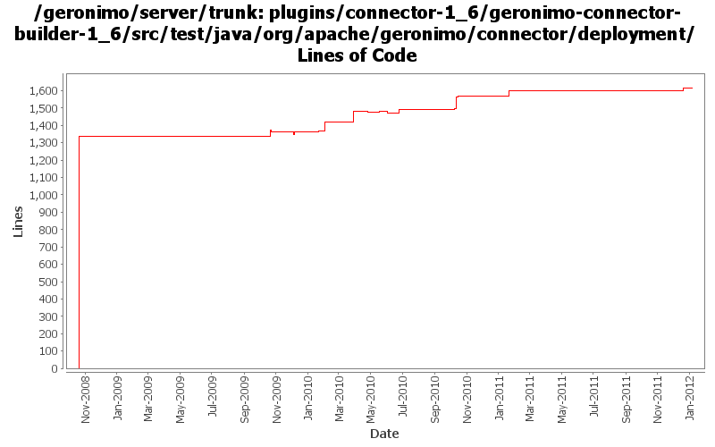

[root]/plugins/connector-1_6/geronimo-connector-builder-1_6/src/test/java/org/apache/geronimo/connector/deployment
 annotation
(2 files, 181 lines)
annotation
(2 files, 181 lines)
 jsr88
(1 files, 564 lines)
jsr88
(1 files, 564 lines)

| Author | Changes | Lines of Code | Lines per Change |
|---|---|---|---|
| Totals | 54 (100.0%) | 1883 (100.0%) | 34.8 |
| djencks | 32 (59.3%) | 1627 (86.4%) | 50.8 |
| xuhaihong | 6 (11.1%) | 118 (6.3%) | 19.6 |
| rickmcguire | 9 (16.7%) | 103 (5.5%) | 11.4 |
| gawor | 7 (13.0%) | 35 (1.9%) | 5.0 |
GERONIMO-6251 determine if server is actually fully started, provide access to DependencyManager for osgi metadata purposes
2 lines of code changed in 1 file:
GERONIMO-6240 Modify configs so that they use features as the bootstrap, and fix a few compile and test errors. Servers build but do not fully start
2 lines of code changed in 1 file:
GERONIMO-6240 Fix build up to system-database. Builder not found for it
40 lines of code changed in 1 file:
GERONIMO-5680 Remove dynamic import * and use calculated import packages on the runtime, only for deployed applications now
43 lines of code changed in 1 file:
fix build break in connector tests
1 lines of code changed in 1 file:
GERONIMO-5659: Inject Bundle or BundleContext using @Resource annotation
4 lines of code changed in 1 file:
reduce the number of directories left in the temp dir after a deploy
6 lines of code changed in 2 files:
GERONIMO-5230 Add Bean Validation Support to the connector 1.6 implementation.
Some unit tests for the builder support.
65 lines of code changed in 1 file:
GERONIMO-5230 Add Bean Validation Support to the connector 1.6 implementation.
Changes to Geronimo base.
15 lines of code changed in 2 files:
cf openejb rev 958340. marshal persistence.xml in the correct namespace, marshal methods names changed
1 lines of code changed in 1 file:
GERONIMO-5190 use openejb-jee jaxb tree for spec dds
40 lines of code changed in 2 files:
GERONIMO-5025, GERONIMO-5117. Make jndi supported directly by Modules and straighten out which contexts are shared when.
6 lines of code changed in 2 files:
GERONIMO-5025 support for jndi configuration in application.xml (part 2)
3 lines of code changed in 1 file:
cf OPENEJB-1252 replace file.toURL() with file.toURI().toURL()
1 lines of code changed in 2 files:
GERONIMO-5253: Publish application name to JNDI (java:app/AppName)
2 lines of code changed in 2 files:
GERONIMO-5214 automatically export packages that ra.xml lists for client-usable classes
63 lines of code changed in 2 files:
GERONIMO-5170: Register connection factories into service registry. Also, allow connection factories to specify custom jndi name for jndi lookups via osgi:service/ scheme
1 lines of code changed in 1 file:
GERONIMO-5203: Register JTA services in service registry and install Aries transaction extensions for blueprint
1 lines of code changed in 1 file:
GERONIMO-5190, GERONIMO-4360. Make jaxb dd objects fit into deployment system a little bit, and add some incomplete connector annotation support
58 lines of code changed in 2 files:
Make axis plugin compile and fix a typo error in geronimo-connector-builder-1.6
1 lines of code changed in 1 file:
GERONIMO-5057 Use those xmlbeans generated by JAVA EE 6 schema files
62 lines of code changed in 3 files:
GERONIMO-5025 Initial work on ee 6 scoped jndi stuff. Minimal testing so far
4 lines of code changed in 2 files:
GERONIMO-5008 Create util methods for all the Geronimo components
12 lines of code changed in 1 file:
revert r887507 - will take a different route
23 lines of code changed in 1 file:
GERONIMO-4975: Simplify integrating new ModuleBuilders with EARConfigBuilder
4 lines of code changed in 1 file:
fix problem in EarConfigBuilder when constructing sub-configurations for wars. Rename DeploymentContext.getBundle to getDependencyBundle to try to make it clearer that it is temporary and not always available. Start updating pluto/console stuff for pluto 2.
1 lines of code changed in 1 file:
More fixup on the xmlbean bundle imports/exports
16 lines of code changed in 3 files:
plugins/connector-1_6 builds
2 lines of code changed in 2 files:
start work on connector_1.6. Builds up through geronimo-connector-builder
63 lines of code changed in 2 files:
move packages to avoid split-packagle problems with tx components
2 lines of code changed in 2 files:
GERONIMO-4531, GERONIMO-4523 Simplify builder collections. Make security principal-role mappings independent of the application
3 lines of code changed in 1 file:
GERONIMO-4360 make copy of connector plugin area for 1.6 spec implementation work. Hopefully the diff part of this change can be reverted when we actually move to 1.6 spec
1336 lines of code changed in 7 files: